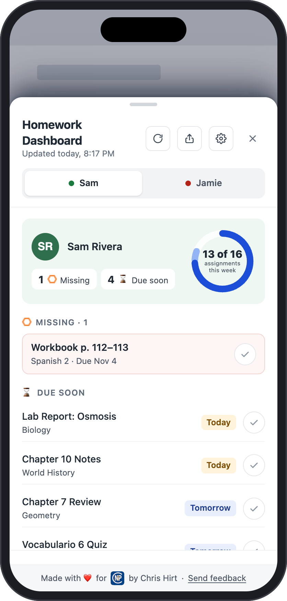

Know what's due, what's missing, and how grades are going.
A dashboard on top of Schoology for parents and students. It's built on research about what helps students take ownership of their work, and what helps parents support them without nagging.
All browsers · Free · Nothing to sign up for

Built with students and parents in mind
Research-based
Every feature is tied to published studies, including the ones that show what not to do, and each one says how the design avoids it. See the sources.
Parents: accountability without nagging
See missing work and low grades at a glance, notice what's going well. Then have a better conversation, not a lecture.
Students: take ownership of your homework
You see the same information your parents do: what to finish first, this week's progress, and personal bests that only go up.
What families see
These pictures use made-up students (the Rivera family). The dashboard reads the grades you can already see in Schoology and puts the important parts first.


The features, briefly
Each one has its own section, with the research, on the Features & research page.
🔒 Safe and private
It only reads Schoology pages you can already see, with your own login. There's no server, no account and no tracking, and grades never leave your browser. The code is open for anyone to check. Details for schools and IT.
🏫 NPC families
Setting up at NPC? There's a short checklist for parents and one for students. Set it up.